Chapter 17 Data visualisation with ggplot2
17.1 Intro to grammar
The ggplot2 package is widely used and valued for its simple, consistent approach to making data visuals.
The 'grammar of graphics' relates to the different components of a plot that function like different parts of linguistic grammar. For example, all plots require axes, so the x and y axes form one part of the ‘language’ of a plot. Similarly, all plots have data represented between the axes, often as points, lines or bars. The visual way that the data is represented forms another component of the grammar of graphics. Furthermore, the colour, shape or size of points and lines can be used to encode additional information in the plot. This information is usually clarified in a key, or legend, which can also be considered part of this ‘grammar’.
The philosophy of ggplot is much better explained by the package author, Hadley Wickham (Wickham et al. (2023)). For now, we just need to be aware that ggplots are constructed by specifying the different components that we want to display, based on underlying information in a data frame.

Figure 17.1: An example of what we can produce in ggplot
17.1.0.1 Before we start
You should have a workspace ready to work with the Palmer penguins data. Load this workspace now.
Think about some basic checks before you start your work today.
17.1.0.2 Checklist
Today we are going to make a NEW R script in the same project space as we have previously been working. This is part of organising our workspace so that our analysis workflow is well documented and easy to follow
Open a new R script - we are moving on from data wrangling to data visualisation
Save this file in the scripts folder and call it
02_visualisation_penguins.RAdd the following to your script and run it:
# LOAD R OBJECTS AND FUNCTIONS ----
source("scripts/01_import_penguins_data.R")
# import tidied penguins data and functions
#__________________________----- You should find your Environment fills up with objects from script 1
The source() function is a very handy way of allowing
you to have different scripts for different parts of your R project, but
allow access to objects built elsewhere. In this way we are building our
analysis in stages.
The above command will ONLY work if you remembered to save and name your script exactly as above AND put that script inside a subfolder called scripts.
Does your project look like the one below?
Figure 17.2: My neat project layout

Figure 17.3: If you have sucessfully saved 02_visualisation_penguins.R it should be visible here too
17.1.0.3 What if source isn't working?
If source isn't working, or you can't figure out your project set-up you can complete this worksheet if you put the following commands at the top of your script instead of source("scripts/01_import_penguins_data.R")
#___________________________----
# SET UP ----
## An analysis of the bill dimensions of male and female Adelie, Gentoo and Chinstrap penguins ----
### Data first published in Gorman, KB, TD Williams, and WR Fraser. 2014. “Ecological Sexual Dimorphism and Environmental Variability Within a Community of Antarctic Penguins (Genus Pygoscelis).” PLos One 9 (3): e90081. https://doi.org/10.1371/journal.pone.0090081. ----
#__________________________----
# PACKAGES ----
library(tidyverse) # tidy data packages
library(janitor) # cleans variable names
library(lubridate) # make sure dates are processed properly
#__________________________----
# IMPORT DATA ----
penguins <- read_csv ("data/penguins_raw.csv")
penguins <- janitor::clean_names(penguins) # clean variable names
#__________________________----17.2 Building a plot
To start building the plot We are going to use the penguin data we have been working with previously. First we must specify the data frame that contains the relevant data for our plot. We can do this in two ways:
- Here we are ‘sending the penguins data set into the ggplot function’:
- Here we are specifying the dataframe within the
ggplot()function
The output is identical
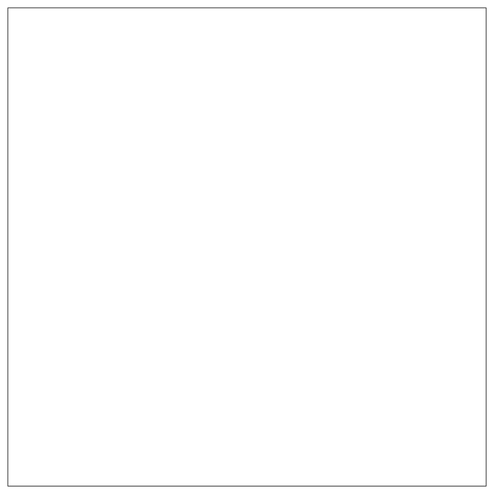
Running this command will produce an empty grey panel. This is because we need to specify how different columns of the data frame should be represented in the plot.
17.2.1 Aesthetics - aes()
We can call in different columns of data from any dataset based on their column names. Column names are given as ‘aesthetic’ elements to the ggplot function, and are wrapped in the aes() function.
Because we want a scatter plot, each point will have an x and a y coordinate. We want the x axis to represent flipper length ( x = flipper_length_mm ), and the y axis to represent the body mass ( y = body_mass_g ).
We give these specifications separated by a comma. Quotes are not required when giving variables within aes().
Those interested in why quotes aren’t required can read about non-standard evaluation.
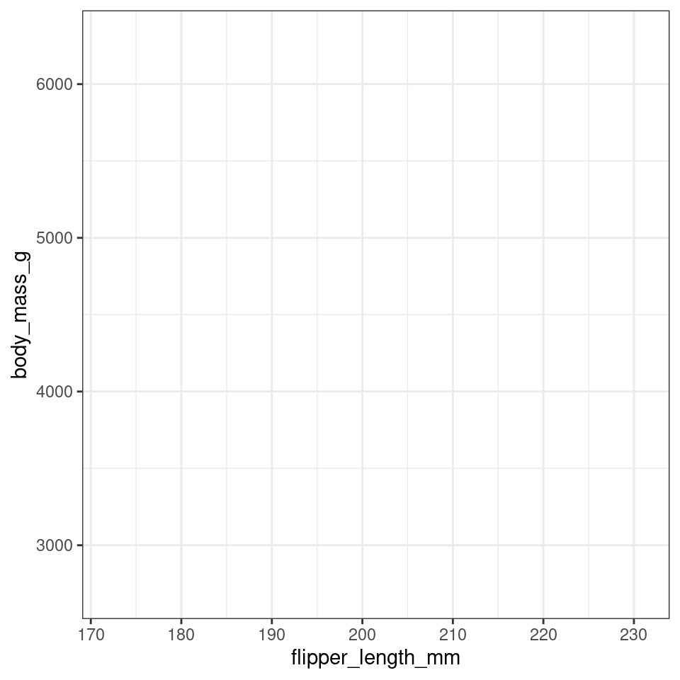
So far we have the grid lines for our x and y axis. ggplot() knows the variables required for the plot, and thus the scale, but has no information about how to display the data points.
17.3 Geometric representations - geom()
Given we want a scatter plot, we need to specify that the geometric representation of the data will be in point form, using geom_point(). There are many geometric object types.

Figure 17.4: geom shapes
Here we are adding a layer (hence the + sign) of points to the plot. We can think of this as similar to e.g. Adobe Photoshop which uses layers of images that can be reordered and modified individually. Because we add to plots layer by layer the order of your geoms may be important for your final aesthetic design.
For ggplot, each layer will be added over the plot according to its position in the code. Below I first show the full breakdown of the components in a layer. Each layer requires information on
- data
- aesthetics
- geometric type
- any summary of the data
- position
## Add a geom ----
penguins |>
ggplot(aes(x=flipper_length_mm,
y = body_mass_g))+
layer( # layer inherits data and aesthetic arguments from previous
geom="point", # draw point objects
stat="identity", # each individual data point gets a geom (no summaries)
position=position_identity()) # data points are not moved in any way e.g. we could specify jitter or dodge if we want to avoid busy overlapping dataThis is quite a complicate way to write new layers - and it is more usual to see a simpler more compact approach
penguins |>
ggplot(aes(x=flipper_length_mm,
y = body_mass_g))+
geom_point() # geom_point function will always draw points, and unless specified otherwise the arguments for position and stat are both "identity".
Now we have the scatter plot! Each row (except for two rows of missing data) in the penguins data set now has an x coordinate, a y coordinate, and a designated geometric representation (point).
From this we can see that smaller penguins tend to have smaller flipper lengths.
17.3.1 |> and +
ggplot2, an early component of the tidyverse package, was written before the pipe was introduced. The + sign in ggplot2 functions in a similar way to the pipe in other functions in the tidyverse: by allowing code to be written from left to right.
17.3.2 Colour
The colors of lines and points can be set directly using colour="red", replacing “red” with a color name. The colors of filled objects, like bars, can be set using fill="red".
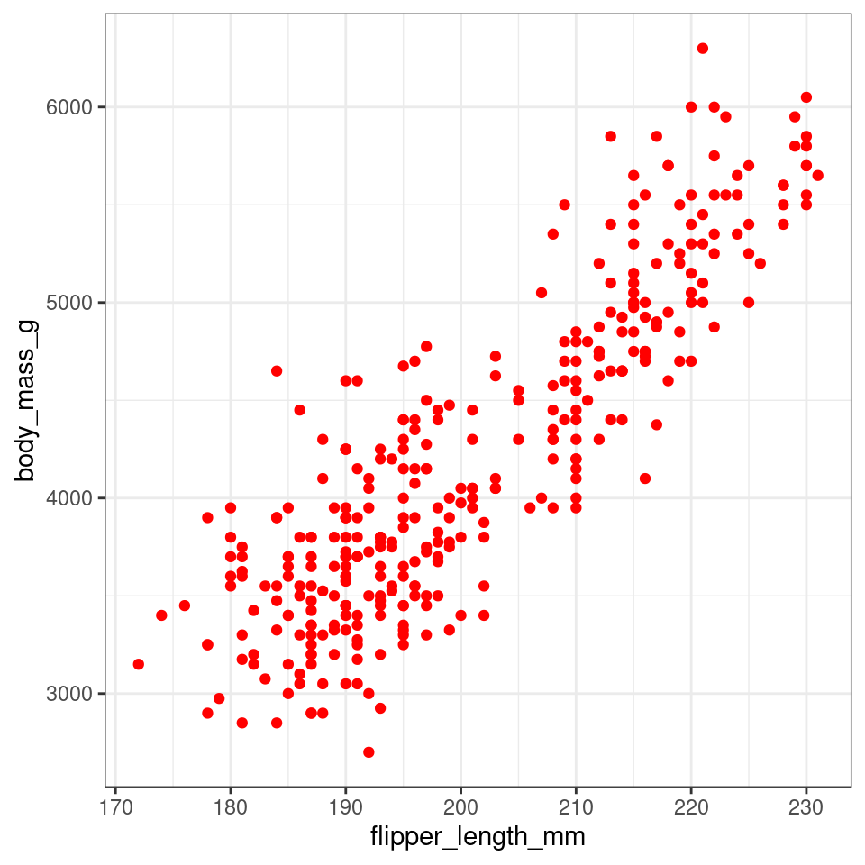
However the current plot could be more informative if colour was used to convey information about the species of each penguin.
In order to achieve this we need to use aes() again, and make the colour conditional upon a variable.
Here, the aes() function containing the relevant column name, is given within the geom_point() function.
A common mistake is to get confused about when to use (or not use)
aes()
If specifying a fixed aesthetic e.g. red for everything it DOES NOT
go inside aes() instead specify e.g. colour = “red” or
shape =21.
If you wish to modify an aethetic according to a variable in your
data THEN it DOES go inside aes()
e.g. aes(colour = species)
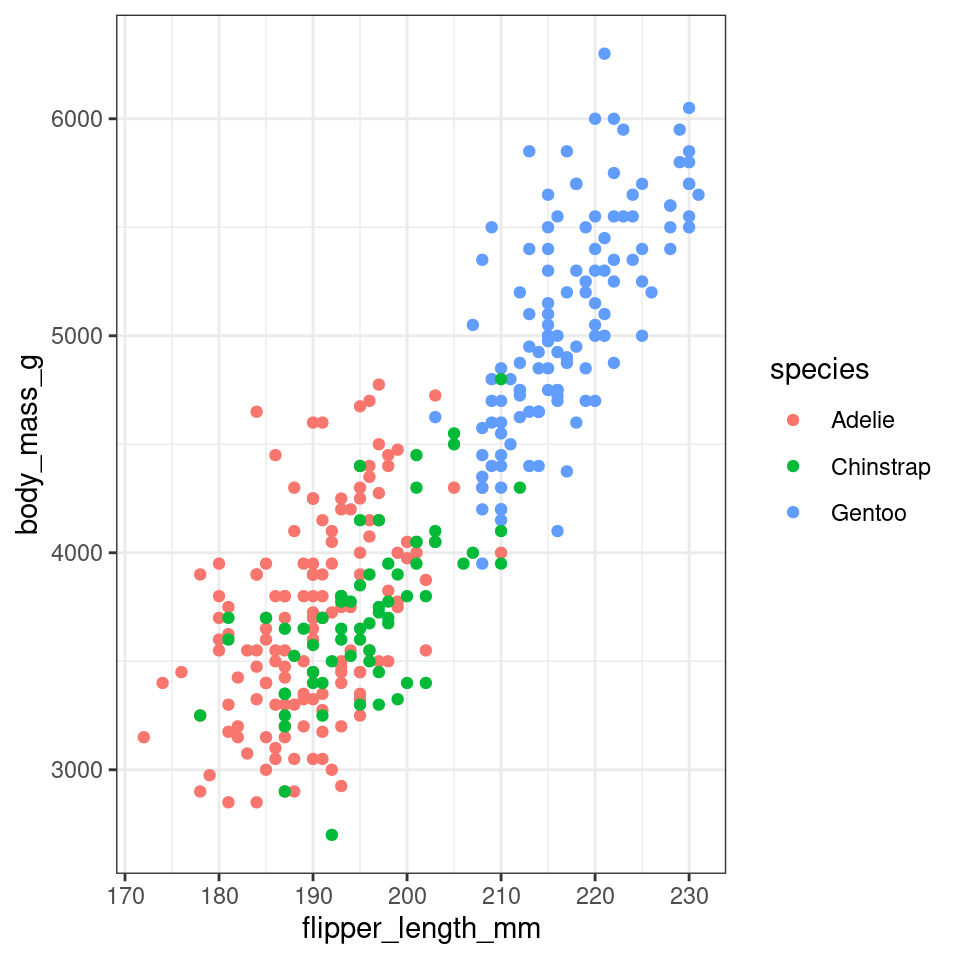
You may (or may not) have noticed that the grammar of ggplot (and tidyverse in general) accepts British/Americanization for spelling!!!
With data visualisations we can start to gain insights into our data very quickly, we can see that the Gentoo penguins tend to be both larger and have longer flippers
Add carriage returns (new lines) after each |> or + symbols.
In most cases, R is blind to white space and new lines, so this is simply to make our code more readable, and allow us to add readable comments.
17.3.3 More layers
We can see the relationship between body size and flipper length. But what if we want to model this relationship with a trend line? We can add another ‘layer’ to this plot, using a different geometric representation of the data. In this case a trend line, which is in fact a summary of the data rather than a representation of each point.
The geom_smooth() function draws a trend line through the data. The default behaviour is to draw a local regression line (curve) through the points, however these can be hard to interpret. We want to add a straight line based on a linear model (‘lm’) of the relationship between x and y.
This is our first encounter with linear models in this course, but we will learn a lot more about them later on.
## Add a second geom ----
penguins |>
ggplot(aes(x=flipper_length_mm,
y = body_mass_g))+
geom_point(aes(colour=species))+
geom_smooth(method="lm", #add another layer of data representation.
se=FALSE,
aes(colour=species)) # note layers inherit information from the top ggplot() function but not previous layers - if we want separate lines per species we need to either specify this again *or* move the color aesthetic to the top layer. 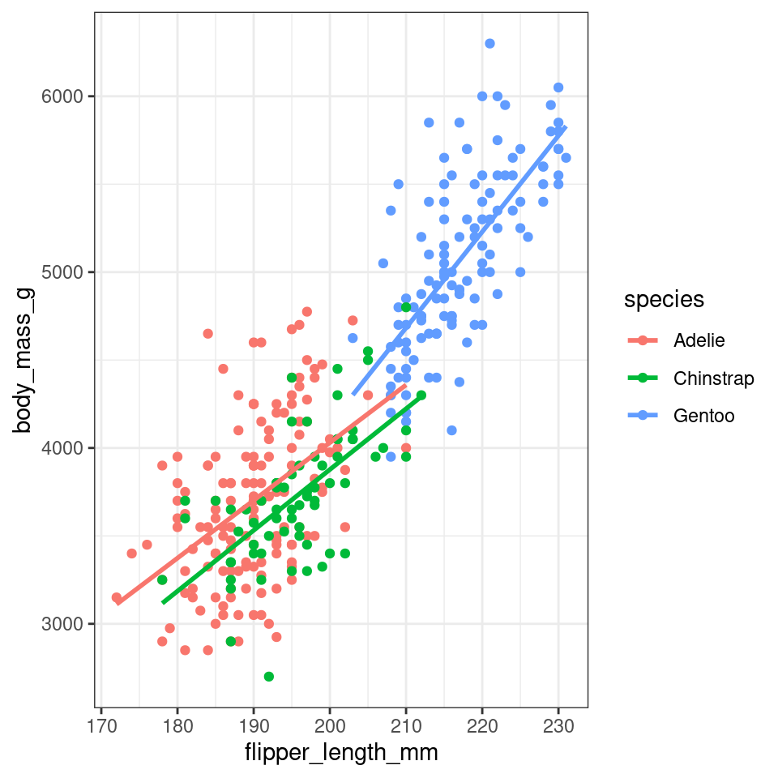
In the example above we may notice that we are assigning colour to the same variable (species) in both geometric layers. This means we have the option to simplify our code. Aesthetics set in the "top layer" of ggplot() are inherited by all subsequent layers.
penguins |>
ggplot(aes(x=flipper_length_mm,
y = body_mass_g,
colour=species))+ ### now colour is set here it will be inherited by ALL layers
geom_point()+
geom_smooth(method="lm", #add another layer of data representation.
se=FALSE)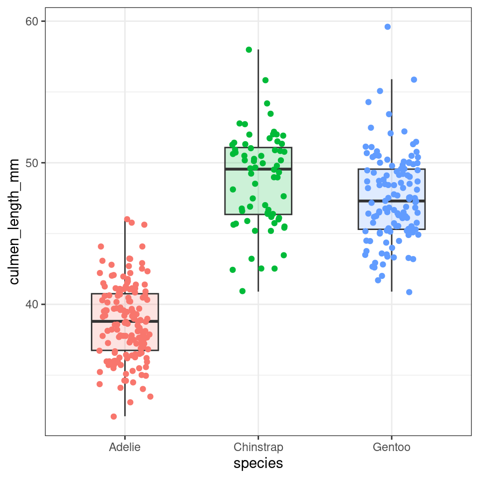
Note - that the trend line is blocking out certain points, because it is the ‘top layer’ of the plot. The geom layers that appear early in the command are drawn first, and can be obscured by the geom layers that come after them.
What happens if you switch the order of the geom_point() and geom_smooth() functions above? What do you notice about the trend line?
17.3.4 Co-ordinate space
ggplot will automatically pick the scale for each axis, and the type of coordinate space. Most plots are in Cartesian (linear X vs linear Y) coordinate space.
For this plot, let’s say we want the x and y origin to be set at 0. To do this we can add in xlim() and ylim() functions, which define the limits of the axes:
## Set axis limits ----
penguins |>
ggplot(aes(x=flipper_length_mm,
y = body_mass_g,
colour=species))+
geom_point()+
geom_smooth(method="lm",
se=FALSE)+
xlim(0,240) + ylim(0,7000)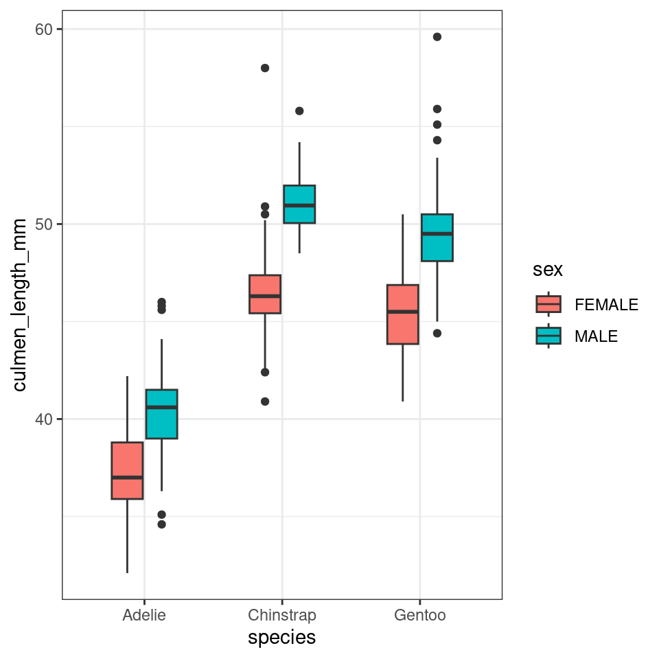
Further, we can control the coordinate space using coord() functions. Say we want to flip the x and y axes, we add coord_flip():
penguins |>
ggplot(aes(x=flipper_length_mm,
y = body_mass_g,
colour=species))+
geom_point()+
geom_smooth(method="lm",
se=FALSE)+
xlim(0,240) + ylim(0,7000)+
coord_flip()
17.4 Labels
By default, the axis labels will be the column names we gave as aesthetics aes(). We can change the axis labels using the xlab() and ylab() functions. Given that column names are often short and can be cryptic, this functionality is particularly important for effectively communicating results.
## Custom labels ----
penguins |>
ggplot(aes(x=flipper_length_mm,
y = body_mass_g,
colour=species))+
geom_point()+
geom_smooth(method="lm",
se=FALSE)+
labs(x = "Flipper length (mm)",
y = "Body mass (g)")
17.4.0.1 Titles and subtitles
## Add titles ----
penguins |>
ggplot(aes(x=flipper_length_mm,
y = body_mass_g,
colour=species))+
geom_point()+
geom_smooth(method="lm",
se=FALSE)+
labs(x = "Flipper length (mm)",
y = "Body mass (g)",
title= "Penguin Size, Palmer Station LTER",
subtitle= "Flipper length and body mass for three penguin species")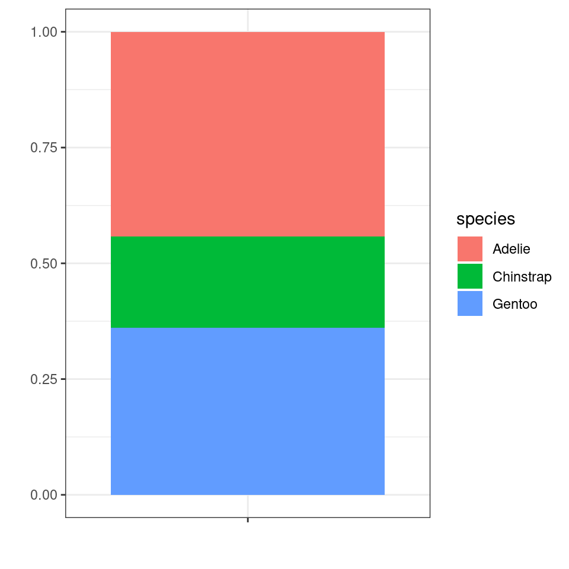
17.5 Themes
Finally, the overall appearance of the plot can be modified using theme() functions. The default theme has a grey background.
You may prefer theme_classic(), a theme_minimal() or even theme_void(). Try them out.
## Custom themes ----
penguins |>
ggplot(aes(x=flipper_length_mm,
y = body_mass_g,
colour=species))+
geom_point()+
geom_smooth(method="lm",
se=FALSE)+
labs(x = "Flipper length (mm)",
y = "Body mass (g)",
title= "Penguin Size, Palmer Station LTER",
subtitle= "Flipper length and body mass for three penguin species")+
theme_void()
There is a lot more customisation available through the theme() function. We will look at making our own custom themes in later lessons
You can also try installing and running an even wider range of pre-built themes if you install the R package ggthemes.
First you will need to run the
install.packages("ggthemes") command. Remember this is one
of the few times a command should NOT be written in your script but
typed directly into the console. That’s because it’s rude to send
someone a script that will install packages on their computer - think of
library() as a polite request instead!
To access the range of themes available type
help(ggthemes) then follow the documentation to find out
what you can do.
17.6 More geom shapes
17.6.1 Jitter
The geom_jitter() command adds some random scatter to the points which can reduce over-plotting. Compare these two plots:
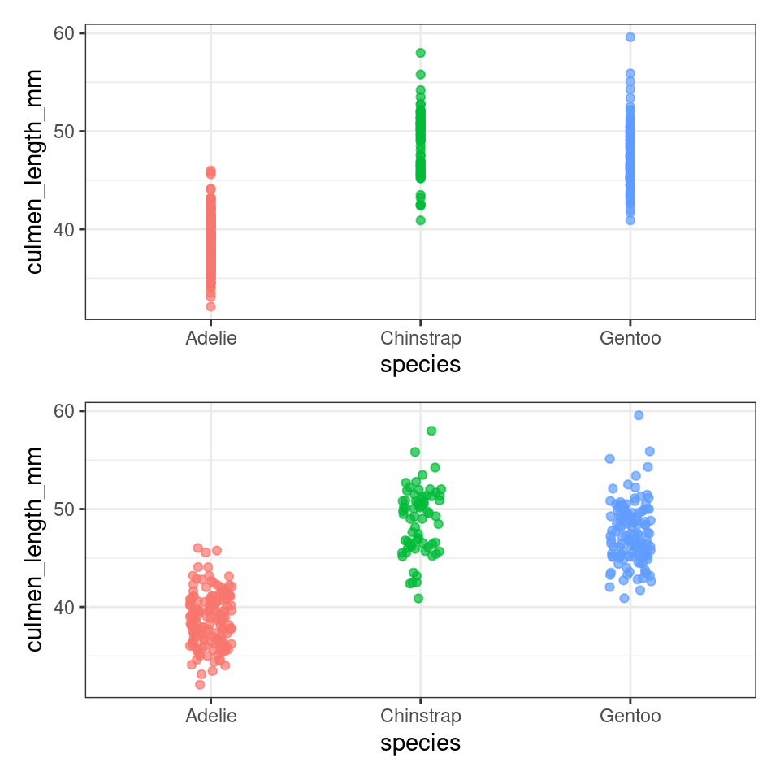
## geom point
ggplot(data = penguins, aes(x = species, y = culmen_length_mm)) +
geom_point(aes(color = species),
alpha = 0.7,
show.legend = FALSE)
## More geoms ----
ggplot(data = penguins, aes(x = species, y = culmen_length_mm)) +
geom_jitter(aes(color = species),
width = 0.1, # specifies the width, change this to change the range of scatter
alpha = 0.7, # specifies the amount of transparency in the points
show.legend = FALSE) # don't leave a legend in a plot, if it doesn't add value17.6.2 Boxplots
Box plots, or ‘box & whisker plots’ are another essential tool for data analysis. Box plots summarize the distribution of a set of values by displaying the minimum and maximum values, the median (i.e. middle-ranked value), and the range of the middle 50% of values (inter-quartile range). The whisker line extending above and below the IQR box define Q3 + (1.5 x IQR), and Q1 - (1.5 x IQR) respectively. You can watch a short video to learn more about box plots here.

To create a box plot from our data we use (no prizes here) geom_boxplot()
ggplot(data = penguins, aes(x = species, y = culmen_length_mm)) +
geom_boxplot(aes(fill = species),
alpha = 0.7,
width = 0.5, # change width of boxplot
show.legend = FALSE)
Note that when specifying colour variables using aes()
some geometric shapes support an internal colour “fill” and an external
colour “colour”. Try changing the aes fill for colour in the code above,
and note what happens.
The points indicate outlier values [i.e., those greater than Q3 + (1.5 x IQR)].
We can overlay a boxplot on the scatter plot for the entire dataset, to fully communicate both the raw and summary data. Here we reduce the width of the jitter points slightly.
ggplot(data = penguins, aes(x = species, y = culmen_length_mm)) +
geom_boxplot(aes(fill = species), # note fill is "inside" colour and colour is "edges" - try it for yourself
alpha = 0.2, # fainter boxes so the points "pop"
width = 0.5, # change width of boxplot
outlier.shape=NA)+
geom_jitter(aes(colour = species),
width=0.2)+
theme(legend.position = "none")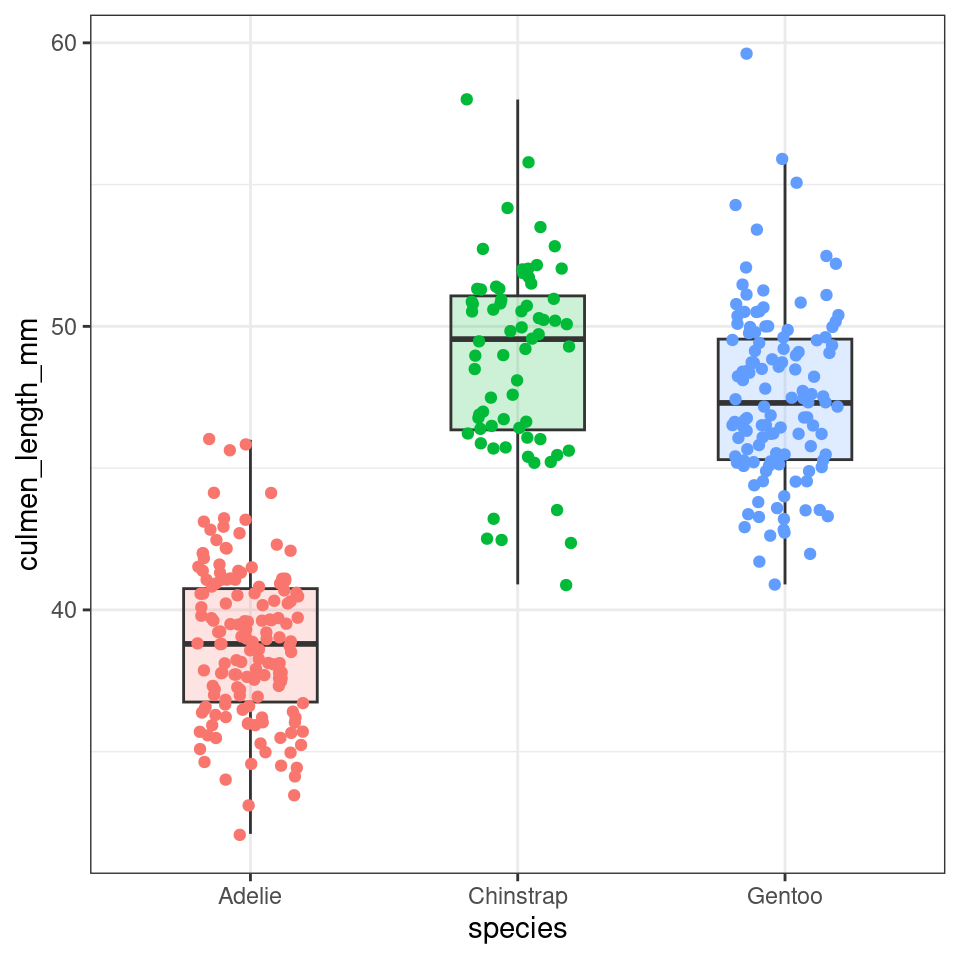
In the above example I switched from using show.legend=FALSE inside the geom layer to using theme(legend.position=“none”). Why? This is an example of reducing redundant code. I would have to specify show.legend=FALSE for every geom layer in my plot, but the theme function applies to every layer. Save code, save time, reduce errors!
17.6.3 Density and histogram
Compare the following two sets of code:
penguins |>
ggplot(aes(x=culmen_length_mm, fill=species),
position = "identity")+
geom_histogram(bins=50)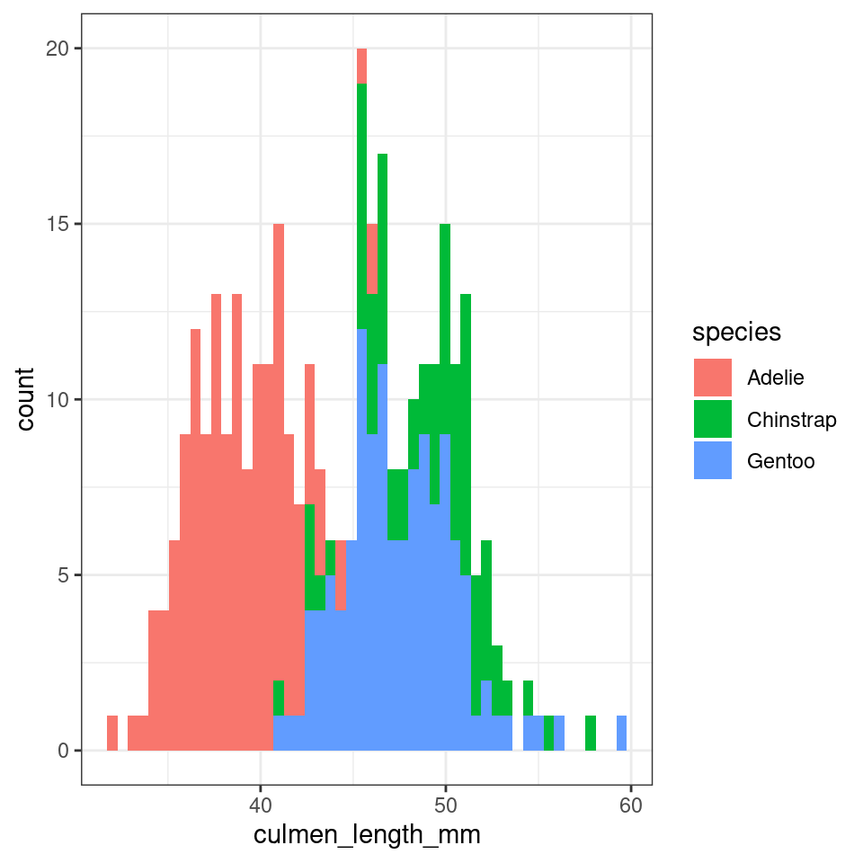
At first you might struggle to see/understand the difference between these two charts. The shapes should be roughly the same.
penguins |>
ggplot(aes(x=culmen_length_mm, fill=species))+
geom_histogram(bins=50,
aes(y=..density..),
position = "identity")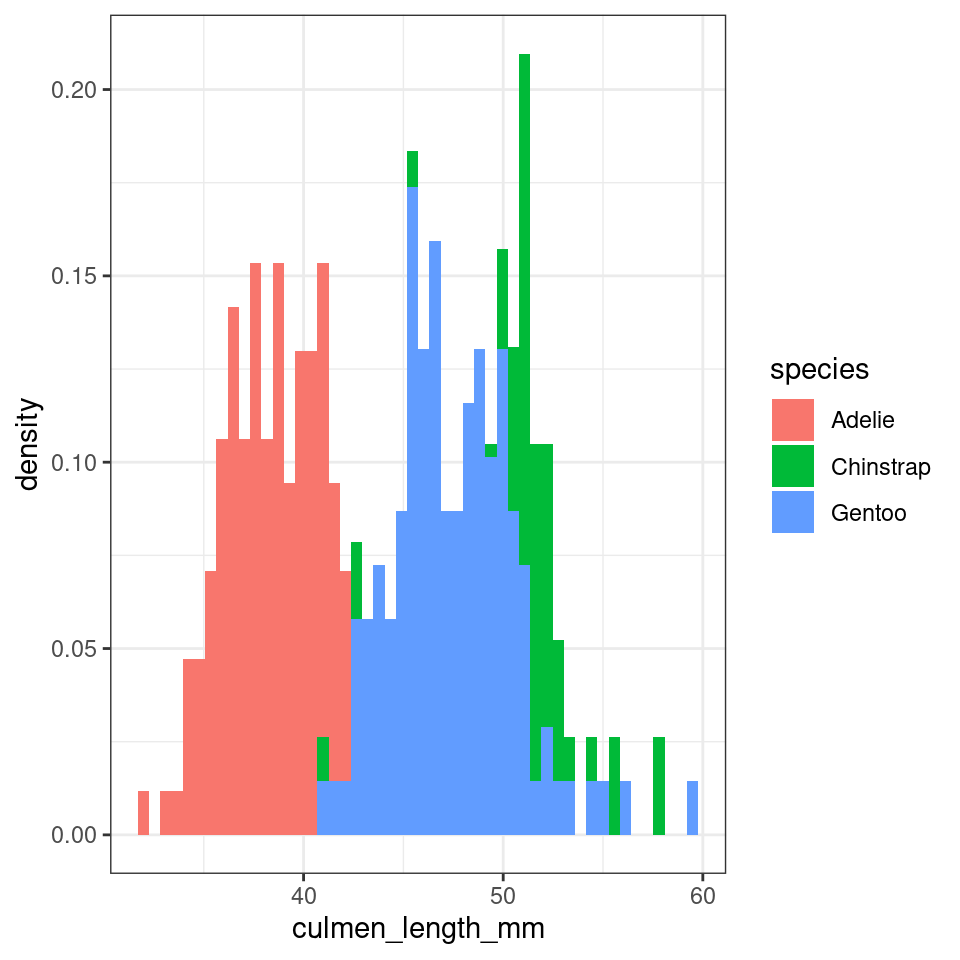
The first block of code produced a frequency histogram, each bar represents the actual number of observations made within each 'bin', the second block of code shows the 'relative density' within each bin. In a density histogram the area under the curve for each sub-group will sum to 1. This allows us to compare distributions and shapes between sub-groups of different sizes. For example there are far fewer Adelie penguins in our dataset, but in a density histogram they occupy the same area of the graph as the other two species.
17.7 More Colours
There are two main differences when it comes to colors in ggplot2. Both arguments, color and fill, can be specified as single color or
assigned to variables.
As you have already seen in this tutorial, variables that are inside the aesthetics are encoded by variables and those that are outside are properties that are unrelated to the variables.
penguins |>
ggplot(aes(x=culmen_length_mm))+
geom_histogram(bins=50,
aes(y=..density..,
fill=species),
position = "identity",
colour="black")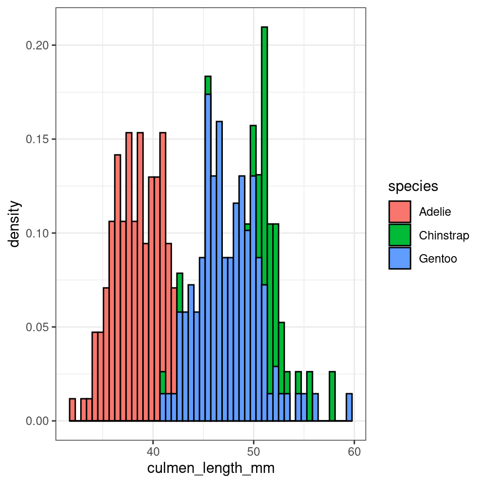
17.7.0.1 Choosing and using colour palettes
You can specify what colours you want to assign to variables in a number of different ways.
In ggplot2, colors that are assigned to variables are modified via the scale_color_* and the scale_fill_* functions. In order to use color with your data, most importantly you need to know if you are dealing with a categorical or continuous variable. The color palette should be chosen depending on type of the variable:
sequential or diverging color palettes being used for continuous variables
qualitative color palettes for (unordered) categorical variables:

You can pick your own sets of colours and assign them to a categorical variable. The number of specified colours has to match the number of categories. You can use a wide number of preset colour names or you can use hexadecimals.
## Custom colours ----
penguin_colours <- c("darkolivegreen4", "darkorchid3", "goldenrod1")
penguins |>
ggplot(aes(x=flipper_length_mm,
y = body_mass_g))+
geom_point(aes(colour=species))+
scale_color_manual(values=penguin_colours)+
theme_minimal()
You can also use a range of inbuilt colour palettes:
penguins |>
ggplot(aes(x=flipper_length_mm,
y = body_mass_g))+
geom_point(aes(colour=species))+
scale_color_brewer(palette="Set1")+
theme_minimal()
You can explore all schemes available with the command
RColorBrewer::display.brewer.all()
There are also many, many extensions that provide additional colour palettes. Some of my favourite packages include ggsci and wesanderson

17.8 Accessibility
17.8.0.1 Colour blindness
It's very easy to get carried away with colour palettes, but you should remember at all times that your figures must be accessible. One way to check how accessible your figures are is to use a colour blindness checker colorBlindness
## Check accessibility ----
library(colorBlindness)
colorBlindness::cvdPlot() # will automatically run on the last plot you made
17.8.0.2 Guides to visual accessibility
Using colours to tell categories apart can be useful, but as we can see in the example above, you should choose carefully. Other aesthetics which you can access in your geoms include shape, and size - you can combine these in complimentary ways to enhance the accessibility of your plots. Here is a hierarchy of "interpretability" for different types of data


17.9 Multiple plots
17.9.0.1 Facets
Adding combinations of different aesthetics allows you to layer more information onto a 2D plot, sometimes though things will just become too busy. At the point where it becomes difficult to see the trends or differences in your plot then we want to break up a single plot into sub-plots; this is called ‘faceting’. Facets are commonly used when there is too much data to display clearly in a single plot. We will revisit faceting below, however for now, let’s try to facet the plot according to sex.
To do this we use the tilde symbol ‘~’ to indicate the column name that will form each facet.
## Facetting ----
penguins |>
drop_na(sex) |>
ggplot(aes(x=flipper_length_mm,
y = body_mass_g,
colour=species))+
geom_point()+
geom_smooth(method="lm",
se=FALSE)+
facet_wrap(~sex)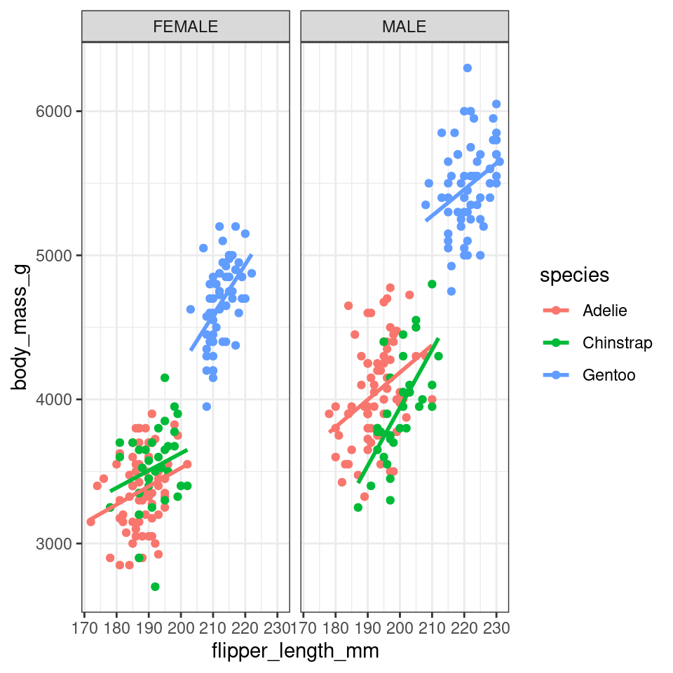
17.9.0.2 Patchwork
There are many times you might want to combine separate figures into multi-panel plots. Probably the easiest way to do this is with the patchwork package (Pedersen (2022)).
## Patchwork ----
library(patchwork)
p1 <- penguins |>
ggplot(aes(x=flipper_length_mm,
y = culmen_length_mm))+
geom_point(aes(colour=species))+
scale_color_manual(values=penguin_colours)+
theme_minimal()
p2 <- penguins |>
ggplot(aes(x=culmen_depth_mm,
y = culmen_length_mm))+
geom_point(aes(colour=species))+
scale_color_manual(values=penguin_colours)+
theme_minimal()
p3 <- penguins |>
group_by(sex,species) |>
summarise(n=n()) |>
drop_na(sex) |>
ggplot(aes(x=species, y=n)) +
geom_col(aes(fill=sex),
width=0.8,
position=position_dodge(width=0.9),
alpha=0.6)+
scale_fill_manual(values=c("darkorange1", "azure4"))+
theme_classic()
(p1+p2)/p3+
plot_layout(guides = "collect") 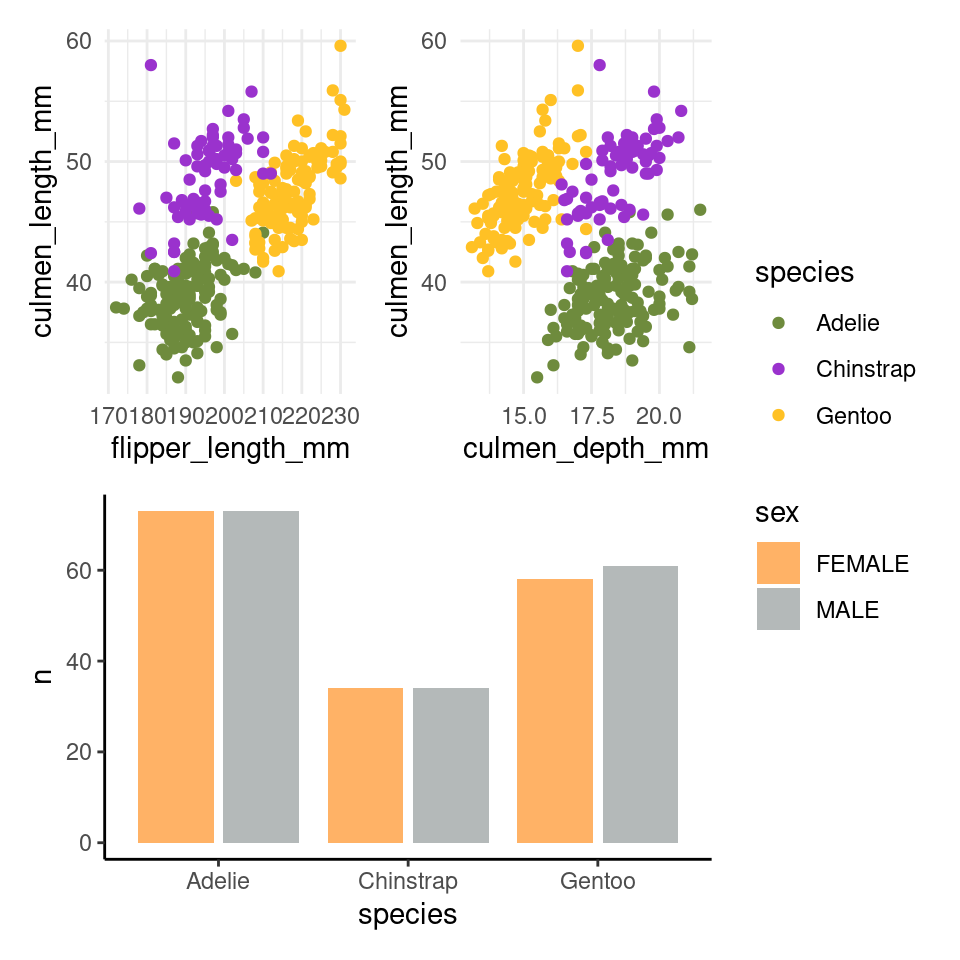
17.10 Activity: Replicate this figure
How close can you get to replicating the figure below?
Make a NEW script for this assignment - replicate_figure.R
Make sure to use the tips and links at the end of this chapter, when you are done save the file

pal <- c(
"Adelie" = "#FF8C00",
"Chinstrap" = "#A034F0",
"Gentoo" = "#159090")
penguins |>
ggplot(aes(x = species,
y = body_mass_g,
fill = species,
colour = species))+
geom_violin(alpha = 0.2)+
geom_boxplot(width = 0.2,
alpha = 0.6)+
scale_fill_manual(values = pal)+
scale_colour_manual(values = pal)+
theme_classic()+
theme(legend.position = "none")+
labs(
x = "",
y = "Body mass (g)",
title = "Body mass of brush-tailed penguins",
subtitle = "Box and violin plot of body mass by species")17.11 Saving
One of the easiest ways to save a figure you have made is with the ggsave() function. By default it will save the last plot you made on the screen.
You should specify the output path to your figures folder, then provide a file name. Here I have decided to call my plot plot (imaginative!) and I want to save it as a .PNG image file. I can also specify the resolution (dpi 300 is good enough for most computer screens).
If you got this far and still have time why not try one of the following:
-
Making another type of figure using the penguins dataset, use the further reading below to use for inspiration.
-
Use any of your own data
17.11.0.1 Quitting
Make sure you have saved your script! Remember to Download your image file from RStudio Cloud onto YOUR computer.
run SessionInfo() at the end of your script to gather
the packages and versions you have been using. This is very useful for
when you cite R versions and
packages when writing reports later.
17.12 Finished
- Make sure you have saved your scripts 💾 in the "scripts" folder.
17.12.0.1 What we learned
You have learned
The anatomy of ggplots
How to add geoms on different layers
How to use colour, colour palettes, facets, labels and themes
Putting together multiple figures
How to save and export images
17.13 Further Reading, Guides and tips on data visualisation
Fundamentals of Data Visualization: this book tells you everything you need to know about presenting your figures for accessbility and clarity
Beautiful Plotting in R: an incredibly handy ggplot guide for how to build and improve your figures
The ggplot2 book: the original Hadley Wickham book on ggplot2